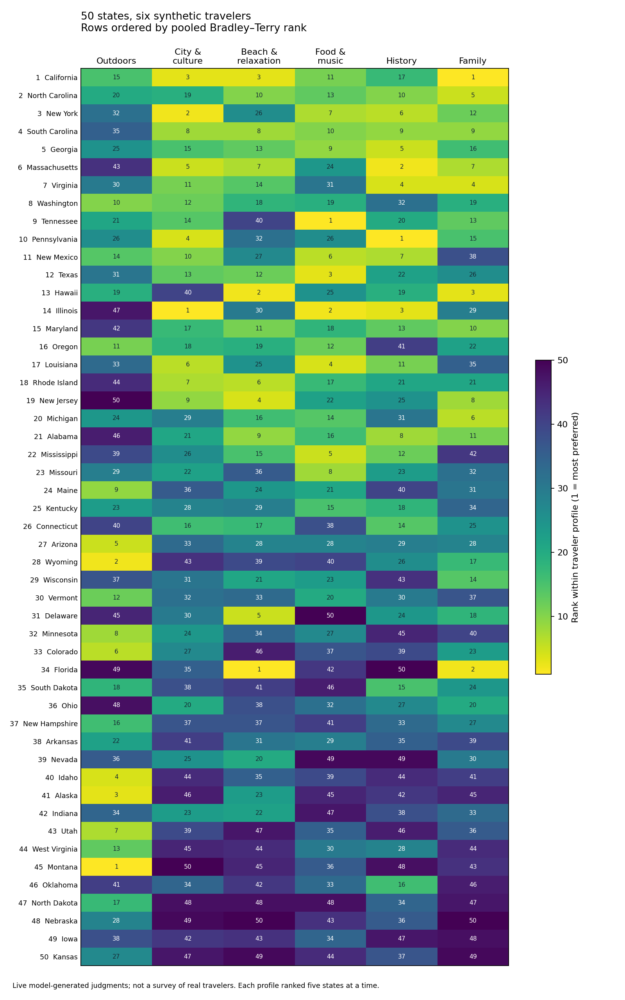
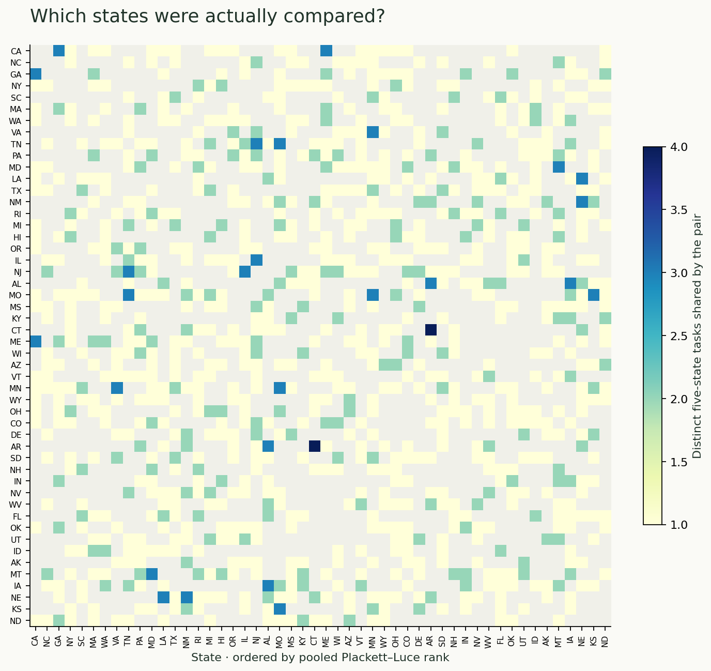
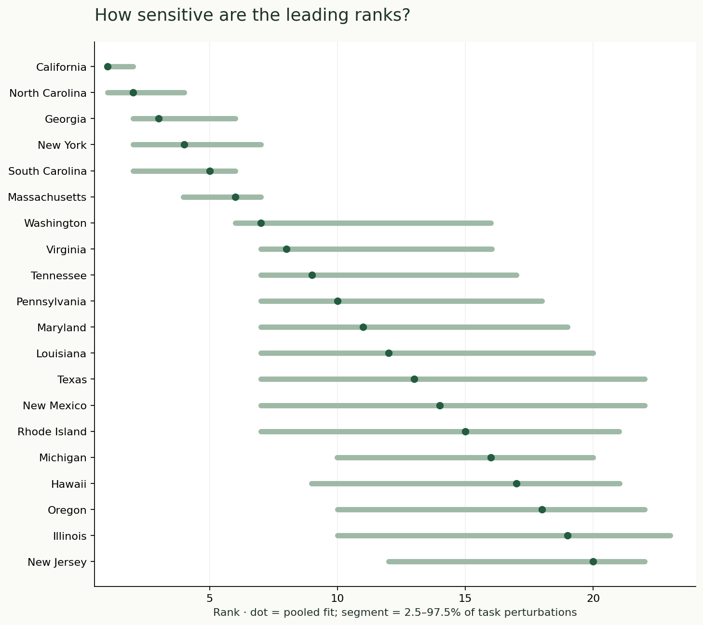
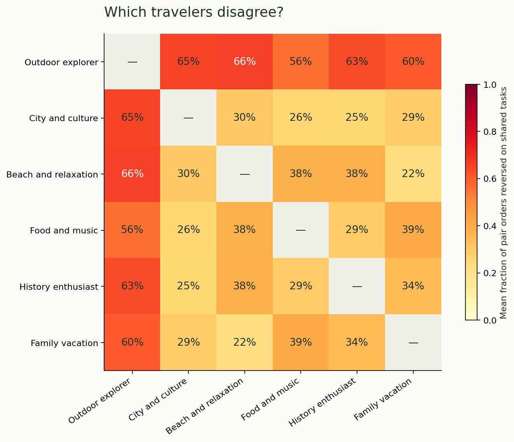
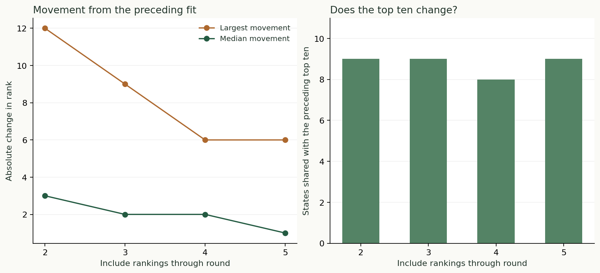

Rank fifty options,
five at a time.
Zermelo is a CLI for ranking a large collection with agents. You provide the options, a criterion, and the rankers. It plans small, overlapping comparisons and combines the answers into an overall ranking.
Use it for product ideas, proposals, or any options you can describe and compare. Here we’ll ask six synthetic travelers which of the 50 U.S. states they would most like to visit. Each answer orders just five states.
See the finished rankings ↓Explore the diagnostic plotsInspect the example data
Small judgments in. One overall ranking out.
Ranking 50 descriptions in one answer asks an agent to keep track of a long list. Zermelo splits that work into manageable questions, then fits the combined evidence. The output is an estimated preference order under your chosen criterion and agent panel.
- Define the study. Register the 50 states (the entrants), a travel criterion, and six traveler profiles (the rankers) saved as an EDSL
agent_list.ep. - Plan and export. Zermelo creates overlapping groups of five. We’ll export 65 questions per traveler in one
ranking_job.epfile. - Run through EP.
ep runexecutes the model calls and savesranking_results.ep. Six travelers answering 65 questions gives 390 group rankings, called ballots. - Import and fit. Zermelo validates those ballots and estimates a preference score for every state. Save the ranking and its diagnostic metadata as JSON or CSV.
- Decide what to ask next. Inspect coverage and sensitivity, then plan more comparisons around close or poorly measured positions. New options can join the same project later.
Why the groups must overlap
If one question ranks Maine, Tennessee, and Pennsylvania, and another ranks Pennsylvania, California, and Oregon, Pennsylvania connects the two sets of evidence. With enough links, the fitter can compare states that never appeared together. Separate, unconnected groups would leave their relative order unresolved.
An ordering Maine → Tennessee → Pennsylvania implies three wins. But simply counting wins ignores which alternatives each state faced. Zermelo’s default Plackett–Luce model fits the whole orderings together, estimating strengths that best explain them. The worked fit below shows how.
Zermelo manages the study; EP executes the agents. Planning, exporting, importing, and fitting are local operations. You explicitly run the exported job through EP when you are ready to make model calls.
Create and select the project
Run the commands from the Zermelo checkout. Create a directory for this example and select it once:
mkdir -p runs/states
zermelo project use runs/statesZermelo remembers the selection. Inputs and outputs below use literal paths inside runs/states. Use zermelo project show to check it, or zermelo next for guidance.
About this completed example
The 390 ballots came from a live run originally made under the name elo. This tutorial uses the current CLI and fits those preserved answers with the current default model. Expandable outputs show selected recorded or locally recomputed data. A new run can produce different answers, ranks, and costs. The original artifacts remain preserved separately.
Register stable options and one clear criterion.
An entrant needs an ID, a name, and the information a judge should consider. In this example, each state has a short, hand-authored tourism description. There are exactly 50 states; Washington, D.C. and territories are outside the pool.
First create the example's entrant cards, traveler profiles, model settings, and design notes. This script only writes local inputs.
python examples/states_visit/prepare.py runs/states/inputsShow command output
{
"states": 50,
"profiles": 6,
"output": "runs/states/inputs",
"agent_list": "runs/states/inputs/agent_list.ep"
}| ID | Name | Information supplied |
|---|---|---|
| CO | Colorado | Rocky Mountain hiking, skiing, mountain towns, and Denver's urban attractions. |
| HI | Hawaii | Tropical beaches, volcanic landscapes, ocean activities, and Native Hawaiian culture. |
| IL | Illinois | Chicago architecture, art museums, live music, diverse food, and prairie towns. |
The descriptions deliberately make this a comparison of supplied cards under stated preferences. They are abbreviated and unevenly informative, so their wording is part of the experiment. A production study should review the cards carefully before fielding.
Next, initialize the project with the criterion that every task will use.
zermelo init \
--criterion 'Rank the states by how much YOU, given your travel preferences, would like to visit for a one-week leisure trip. Assume it would be your first visit to every state, choose each state'"'"'s best season for your interests, and disregard distance from home. Consider the supplied descriptions and your stated preferences. Put the state you most want to visit FIRST.'Show command output (selected fields)
{
"status": "ok",
"data": {
"project": "runs/states",
"criterion": "Rank the states by how much YOU, given your travel preferences, would like to visit for a one-week leisure trip. Assume it would be your first visit to every state, choose each state's best season for your interests, and disregard distance from home. Consider the supplied descriptions and your stated preferences. Put the state you most want to visit FIRST."
}
}The first-visit assumption removes prior travel history; choosing a favorable season removes a specific departure date; disregarding distance avoids an unstated home location. These are consequential choices, so the exact criterion is saved with the project.
zermelo entrants import runs/states/inputs/entrants.csvShow command output
{
"status": "ok",
"command": "elo entrants import",
"data": {
"added": 50,
"total": 50
},
"warnings": [],
"errors": [],
"next_steps": []
}CSV and JSON imports accept id, name, and an optional description. The ID remains the join key across tasks, answers, retries, and scores. You can also register an option with zermelo entrants add. Each batch freezes its own entrant snapshot. New entrants can be appended and connected to earlier results.
Define six travel perspectives.
“Most like to visit” depends on the traveler. A national-park enthusiast and a theater enthusiast may both answer coherently and disagree. We supply six synthetic profiles, give each the same tasks, and later examine both the pooled result and the separate profiles.
| Synthetic traveler | Stated preferences |
|---|---|
| Outdoor explorer | Your ideal vacation involves scenic hiking, national parks, wildlife, and mountain or wilderness landscapes. You prefer quiet natural places to big-city nightlife or theme parks. |
| City and culture traveler | Your ideal vacation combines major art museums, architecture, walkable neighborhoods, theater, and varied restaurants. You enjoy cities and cultural variety more than remote nature. |
| Beach and relaxation traveler | Your ideal vacation offers attractive swimming beaches, ocean scenery, comfortable lodging, warm weather, and unhurried days. You would choose relaxation over strenuous hiking. |
| Food and music traveler | You travel for distinctive regional cooking, local food traditions, live music, and lively neighborhoods. You prize memorable cultural experiences over resort luxury or landmark checklists. |
| History enthusiast | You travel for historic districts, museums, architecture, and opportunities to learn about American history, including Indigenous cultures and civil rights. You enjoy thoughtful walking tours. |
| Family vacation planner | You plan vacations with two school-age children. You value a mix of engaging educational attractions, accessible outdoor fun, beaches or amusement parks, and manageable logistics. You prefer variety and practical family experiences over nightlife or difficult wilderness trips. |
Where do these rankers come from?
The six personas are hand-authored in the example script's PROFILES list. They are stated preferences supplied to the model; they are not retrieved people, survey respondents, or agents generated by another paid call. The preceding prepare.py command saves them as an EDSL AgentList in runs/states/inputs/agent_list.ep.
Download the six rankers as agent_list.ep, or inspect the complete creation code below. For your own study, supply a native EDSL AgentList. Valid unique names serve as IDs; unnamed agents receive stable IDs automatically.
Show the Python that creates the six rankers
from edsl import Agent, AgentList
profiles = [{'id': 'beach_relaxation',
'traits': {'profile_name': 'Beach and relaxation traveler',
'travel_preferences': 'Your ideal vacation offers attractive swimming '
'beaches, ocean scenery, comfortable lodging, '
'warm weather, and unhurried days. You would '
'choose relaxation over strenuous hiking.',
'trip_assumptions': 'You are choosing a first leisure visit to each '
'state. Plan a one-week trip in the season that '
'best suits your interests. Set aside travel '
'distance from home and assume adequate funds for '
'a normal vacation. Express your own travel '
'preferences, not a generic tourism ranking.'}},
{'id': 'city_culture',
'traits': {'profile_name': 'City and culture traveler',
'travel_preferences': 'Your ideal vacation combines major art museums, '
'architecture, walkable neighborhoods, theater, '
'and varied restaurants. You enjoy cities and '
'cultural variety more than remote nature.',
'trip_assumptions': 'You are choosing a first leisure visit to each '
'state. Plan a one-week trip in the season that '
'best suits your interests. Set aside travel '
'distance from home and assume adequate funds for '
'a normal vacation. Express your own travel '
'preferences, not a generic tourism ranking.'}},
{'id': 'family',
'traits': {'profile_name': 'Family vacation planner',
'travel_preferences': 'You plan vacations with two school-age '
'children. You value a mix of engaging '
'educational attractions, accessible outdoor '
'fun, beaches or amusement parks, and manageable '
'logistics. You prefer variety and practical '
'family experiences over nightlife or difficult '
'wilderness trips.',
'trip_assumptions': 'You are choosing a first leisure visit to each '
'state. Plan a one-week trip in the season that '
'best suits your interests. Set aside travel '
'distance from home and assume adequate funds for '
'a normal vacation. Express your own travel '
'preferences, not a generic tourism ranking.'}},
{'id': 'food_music',
'traits': {'profile_name': 'Food and music traveler',
'travel_preferences': 'You travel for distinctive regional cooking, '
'local food traditions, live music, and lively '
'neighborhoods. You prize memorable cultural '
'experiences over resort luxury or landmark '
'checklists.',
'trip_assumptions': 'You are choosing a first leisure visit to each '
'state. Plan a one-week trip in the season that '
'best suits your interests. Set aside travel '
'distance from home and assume adequate funds for '
'a normal vacation. Express your own travel '
'preferences, not a generic tourism ranking.'}},
{'id': 'history',
'traits': {'profile_name': 'History enthusiast',
'travel_preferences': 'You travel for historic districts, museums, '
'architecture, and opportunities to learn about '
'American history, including Indigenous cultures '
'and civil rights. You enjoy thoughtful walking '
'tours.',
'trip_assumptions': 'You are choosing a first leisure visit to each '
'state. Plan a one-week trip in the season that '
'best suits your interests. Set aside travel '
'distance from home and assume adequate funds for '
'a normal vacation. Express your own travel '
'preferences, not a generic tourism ranking.'}},
{'id': 'outdoors',
'traits': {'profile_name': 'Outdoor explorer',
'travel_preferences': 'Your ideal vacation involves scenic hiking, '
'national parks, wildlife, and mountain or '
'wilderness landscapes. You prefer quiet natural '
'places to big-city nightlife or theme parks.',
'trip_assumptions': 'You are choosing a first leisure visit to each '
'state. Plan a one-week trip in the season that '
'best suits your interests. Set aside travel '
'distance from home and assume adequate funds for '
'a normal vacation. Express your own travel '
'preferences, not a generic tourism ranking.'}}]
rankers = AgentList([Agent(name=p["id"], traits=p["traits"]) for p in profiles])
rankers.git.save("agent_list.ep")zermelo rankers add runs/states/inputs/agent_list.ep
zermelo rankers listrankers add registers the list once. Each later batch export uses that registered panel automatically. Zermelo preserves the original file bytes and a native combined AgentList snapshot. Additional lists can append rankers; conflicting definitions under an existing name are rejected. Already exported batches keep their original panel.
Every profile also receives the same trip assumptions: a one-week leisure trip, a first visit, an appropriate season, and adequate funds for a normal vacation. Each profile is asked to express its own preferences. The profiles are native EDSL Agent objects stored together in agent_list.ep.
The panel is a design choice. Equal numbers of ballots give these six profiles equal representation in the pooled fit. They do not make the panel representative of any real population. Adding another beach traveler would change the preference mixture being estimated.
Small groups need bridges between them.
Plan five rounds of five-state questions. Within a round, the planner shuffles the entrants, takes five at a time, and advances by four. Consecutive groups therefore share an entrant. It fills the last group by wrapping to the start and independently shuffles each group's displayed order.
zermelo batch plan main \
--chunk-size 5 --rounds 5 --seed 20260914Show command output (selected fields)
{
"status": "ok",
"data": {
"batch_id": "main",
"chunk_size": 5,
"rounds": 5,
"seed": 20260914,
"coverage": {
"unique_pairs": 518,
"possible_pairs": 1225
},
"design_hash": "0a7a7387be38093e66da6b562fb9254fde4e063bcaf8c93862a4d7fd3c5f281e"
}
}| Argument | Meaning in this run |
|---|---|
--chunk-size 5 | Every judgment ranks five states, so one task implies ten pairwise wins. |
--rounds 5 | Reshuffle the comparison chain five times. These rounds define task sets; they do not feed earlier answers back to agents. |
--seed 20260914 | Make the grouping and display order reproducible. |
The first three groups in the actual design
Highlighted states connect adjacent groups: Maine links groups 1 and 2; California links groups 2 and 3. Other states connect later groups in the same way. Every round covers all 50 entrants and forms one connected comparison graph.
This run observed 518 of the 1,225 distinct state pairs, or 42.3%, for each traveler. Every state appeared in five to nine groups per traveler. The design is connected, but appearances are not perfectly balanced and not every pair is directly compared.
Try a different task budget
This is the planner's task-count calculation, not a cost or accuracy estimate. Larger groups produce more implied comparisons per call, but make each judgment harder. Those comparisons are also dependent because they come from the same ranking.
Zermelo writes the jobs. EP runs them.
Export the planned groups with the six agent definitions and an explicit model. The model settings file in this example sets temperature to 0.7 and the output limit to 4,096 tokens. The exporter resolves and saves the model's complete parameter set.
zermelo batch export main \
--model gemini-3.1-flash-lite --service google \
--output runs/states/ranking_job.ep \
--model-parameters runs/states/inputs/model-parameters.jsonShow command output (selected fields)
{
"status": "ok",
"data": {
"scenario_count": 65,
"agent_count": 6,
"question_count": 1,
"model_count": 1,
"iterations": 1,
"expected_model_calls": 390,
"model": {
"inference_service": "google",
"model": "gemini-3.1-flash-lite",
"parameters": {
"maxOutputTokens": 4096,
"stopSequences": [],
"temperature": 0.7,
"thinking_budget": null,
"topK": 1,
"topP": 1
}
},
"jobs_path": "runs/states/ranking_job.ep",
"results_path": "runs/states/ranking_results.ep",
"execution": "external via ep run"
}
}--output chooses the actual job file you will pass to EP. Here it is runs/states/ranking_job.ep, with results expected beside it at runs/states/ranking_results.ep. Export prints the exact cost, run, and import commands. An archival copy and its manifest stay inside the project; you do not need to navigate that archive. Use --results-output to choose a different results filename.
The resulting ranking_job.ep contains one rank question crossed with 65 scenarios, six agents, and one model. Each scenario supplies five state cards and their displayed option order. Export saves the native artifact and immediately reloads it to verify the round trip. No model execution occurs during export.
Check the instrument before submitting it: batch show main exposes the frozen design and manifest. The model name here identifies the worked run; inspect ep models when choosing a model for a new study. EP owns authentication: use an existing valid configuration, or set one up with ep auth login.
ep jobs cost runs/states/ranking_job.epShow command output
{
"status": "ok",
"data": {
"credits_hold": 28.77,
"usd": 0.2877,
"is_exact": false,
"estimate_kind": "point_estimate",
"assumptions": {
"reasoning_tokens": {
"included_in_point_estimate": true,
"expected_tokens": 0,
"models": []
},
"pricing_revision": null
},
"warnings": []
},
"warnings": []
}What did the recorded run cost?
EP estimated $0.2877 for the main run. The main job subsequently reported a charge of $0.1087. Across the 390 accepted result rows, recorded token costs sum to $0.109375 for 186,633 input tokens and 41,811 output tokens. The per-result sum is not a reconciled account bill; failed calls have no usable token record here. We did not record a reliable end-to-end elapsed time.
The live run was explicitly authorized and submitted with private visibility. For a new run, model inference is the point at which external work and charges begin.
ep run --jobs runs/states/ranking_job.ep \
--n 1 --task-timeout 900 \
--remote_inference_results_visibility private \
--output runs/states/ranking_results.epThis command writes the result artifact directly to runs/states/ranking_results.ep. That is the saved destination Zermelo will use when importing this batch.
The first result file contained 390 interview rows: 388 successful rankings and two failures. The next chapters inspect a successful answer and then handle the missing work.
One ordering supplies ten pairwise wins.
The first task displayed Tennessee, Illinois, Pennsylvania, New Jersey, and Maine, in that order. The outdoor traveler returned the zero-based indices [4, 0, 2, 1, 3]. Looking those indices up in the saved option order gives Maine → Tennessee → Pennsylvania → Illinois → New Jersey, best first.
Compare every earlier state with every later state. Maine defeats four states, Tennessee defeats three, Pennsylvania defeats two, and Illinois defeats one: ten wins in total. We do not count only neighboring positions, and we do not infer a victory over a state absent from this group.
Inspect the actual first-task answers
Displayed options: 0 Tennessee · 1 Illinois · 2 Pennsylvania · 3 New Jersey · 4 Maine
The explanation is the model's returned comment from this live task. It helps interpret the answer; the numerical fit uses the ordering only.
These implied wins help us understand a ballot. The default fit uses its whole ordering; the alternative Bradley–Terry and Elo methods use the implied pairs. Either way, one five-state answer remains one observation. Its ten wins do not supply ten independent samples for measuring uncertainty.
A result row counts only if it matches its assignment.
The importer checks the batch and design hash, assigned task, judge definition, model settings, iteration, candidate information, and full ranking. A valid ballot must rank every assigned entrant exactly once. No ties, omissions, foreign IDs, or invented answers are accepted.
zermelo results import main \
runs/states/ranking_results.ep --skip-invalidShow command output (selected fields)
{
"status": "warning",
"data": {
"added": 388,
"duplicates": 0,
"native_code_rows_mapped": 388,
"rejected": [
{
"row": 275,
"task_id": "main-t000046",
"judge_id": "family",
"iteration": 0,
"code": "invalid_ranking",
"message": "main-t000046: rank every assigned entrant exactly once, best first",
"ranking": null
},
{
"row": 355,
"task_id": "main-t000060",
"judge_id": "city_culture",
"iteration": 0,
"code": "invalid_ranking",
"message": "main-t000060: rank every assigned entrant exactly once, best first",
"ranking": null
}
],
"coverage": {
"batch_id": "main",
"exported": true,
"expected": 390,
"received": 388,
"missing": [
{
"task_id": "main-t000046",
"judge_id": "family",
"iteration": 0
},
{
"task_id": "main-t000060",
"judge_id": "city_culture",
"iteration": 0
}
],
"complete": false
}
}
}After results arrive at the saved destination, the shorter zermelo results import main --skip-invalid works too. Supplying a path explicitly is useful for retry files.
The --skip-invalid flag explicitly keeps usable ballots from a partially failed result file. Without it, an invalid ranking rejects the import transaction. With it, every rejected row remains itemized, its assignment stays missing, and the original result bytes are preserved in the project database.
The recorded first pass supplied 388 valid ballots and left two assignments missing. Targeted retries brought the dataset to 390 unique valid ballots. Check the import’s coverage.complete before fitting: the normal ranking command requires all assigned work to be imported.
If assignments fail: the recorded retry example
The importer decodes native option indices using each task’s frozen display order. It accepts a complete permutation only. The two missing assignments were the family profile on task 46 and the city profile on task 60.
python examples/states_visit/retry_jobs.py runs/statesShow command output (selected fields)
{
"assignments": [
{
"task_id": "main-t000046",
"judge_id": "family",
"iteration": 0
},
{
"task_id": "main-t000060",
"judge_id": "city_culture",
"iteration": 0
}
]
}The example's retry helper writes one native job for each missing assignment. It preserves the original scenario, agent, model, and iteration, avoiding the accidental cross-product that would result from combining unmatched agents and scenarios into one job.
ep run --jobs runs/states/retries/retry-02.jobs.ep \
--fresh --task-timeout 900 \
--remote_inference_results_visibility private \
--output runs/states/retries/retry-02.results.epShow command output (selected fields)
{
"status": "ok",
"data": {
"meta": {
"result_count": 1,
"run_status": "complete",
"completed_interview_count": 1,
"failed_interview_count": 0
}
}
}zermelo results import main \
runs/states/retries/retry-02.results.epShow command output (selected fields)
{
"status": "warning",
"data": {
"added": 1,
"duplicates": 0,
"coverage": {
"expected": 390,
"received": 389,
"complete": false
}
}
}The city retry succeeded. The family assignment failed twice more, so its final retry added a documented instruction to return all five option indices exactly once. That clarified response format while preserving the states, traveler, criterion, and model parameters. Both the earlier jobs and the format clarification are retained; no missing ranking was filled in by hand.
zermelo results import main \
runs/states/retries/retry-01-format.results.epShow command output (selected fields)
{
"status": "ok",
"data": {
"added": 1,
"duplicates": 0,
"native_code_rows_mapped": 1,
"coverage": {
"expected": 390,
"received": 390,
"missing": [],
"complete": true
}
}
}Identical reimports are deduplicated. A conflicting answer for the same task/judge/iteration is rejected rather than silently replacing the earlier result. The failed submissions are not additional preference evidence.
Find strengths that explain the group rankings.
Plackett–Luce models a ballot as successive choices: pick the best of five, then the best of the remaining four, and so on. It estimates one preference strength per state from all the ballots jointly. Stronger states are more likely to appear earlier, with each probability depending on the other states in that group.
See the probability model
For an ordering A → B → C, with strength θ for each option:
The fitter maximizes the combined log likelihood with an L2 penalty (default 1), which shrinks sparse estimates toward zero and keeps undefeated options’ estimates finite. This model assumes a shared strength can summarize each state’s appeal; profile disagreements can strain that assumption.
zermelo rank --method pl --bootstrap 200 --seed 20260915 --output runs/states/rankings-pl.jsonShow command output (selected fields)
{
"method": "pl",
"ballots": 390,
"cluster": "task",
"clusters": 65,
"draws": 200,
"max_rank_movement_p95": 12.0,
"expected_adjacent_reversals_under_perturbation": 17.825
}--method pl names the CLI default explicitly. This command writes runs/states/rankings-pl.json: the ordered states, scores, coverage, fit settings, input hash, and sensitivity diagnostics. It runs locally on imported answers.
--bootstrap 200 also re-fits 200 times with different weights on the observed tasks. Each task’s six traveler answers stay together. The resulting rank ranges show sensitivity to this evidence; they are not guaranteed confidence intervals.
The normal fit requires complete declared coverage and a connected comparison graph. --allow-incomplete permits a provisional fit with missing assignments, but every entrant must still be connected by observed comparisons.
Save a CSV for a spreadsheet
zermelo rank --method pl --output runs/states/rankings.csvThe CSV contains the ranked rows; an accompanying rankings.metadata.json records the fit and provenance.
Read the score as well as the position
Scores use an Elo-style scale centered at 1500. A 400-point gap corresponds to modeled pairwise odds of 10:1. This is a convenient scale for the fitted strengths; it does not mean the fit used sequential Elo updates.
Compare two states
Calculated from the pooled Plackett–Luce strengths. This is a prediction for the selected persona mixture, not the share of real travelers who would choose State A.
Compare Bradley–Terry and sequential Elo
Bradley–Terry fits the implied pairwise wins jointly. Its default pair weight is 1/(k−1), making each entrant’s comparison exposure within a ballot comparable across group sizes. --weighting pair gives every implied win unit weight. Those weighting choices apply to BT and Elo; PL fits whole orderings.
zermelo rank --method bt --output runs/states/rankings-bt.csvShow command output (selected fields)
{
"status": "ok",
"data": {
"method": "bt",
"weighting": "entrant",
"complete": true,
"diagnostics": {
"ballots": 390,
"implied_wins": 3900,
"weighted_wins": 975.0,
"components": [
[
"AK",
"AL",
"AR",
"AZ",
"CA",
"CO",
"CT",
"DE",
"FL",
"GA",
"HI",
"IA",
"ID",
"IL",
"IN",
"KS",
"KY",
"LA",
"MA",
"MD",
"ME",
"MI",
"MN",
"MO",
"MS",
"MT",
"NC",
"ND",
"NE",
"NH",
"NJ",
"NM",
"NV",
"NY",
"OH",
"OK",
"OR",
"PA",
"RI",
"SC",
"SD",
"TN",
"TX",
"UT",
"VA",
"VT",
"WA",
"WI",
"WV",
"WY"
]
],
"unique_pairs": 518,
"fit": {
"converged": true,
"iterations": 11,
"objective": 559.1723555780857,
"regularization": 1.0
}
},
"rankings": [
{
"id": "CA",
"name": "California",
"rating": 1780.2216693478836,
"strength": 1.6130855964358586,
"ballots": 36,
"wins": 119,
"losses": 25,
"rank": 1
},
{
"id": "NC",
"name": "North Carolina",
"rating": 1717.9868151050407,
"strength": 1.2548329773252895,
"ballots": 30,
"wins": 98,
"losses": 22,
"rank": 2
},
{
"id": "NY",
"name": "New York",
"rating": 1676.7802455216492,
"strength": 1.017628895184942,
"ballots": 36,
"wins": 106,
"losses": 38,
"rank": 3
},
{
"id": "SC",
"name": "South Carolina",
"rating": 1675.1033966143661,
"strength": 1.0079761769421587,
"ballots": 30,
"wins": 95,
"losses": 25,
"rank": 4
},
{
"id": "GA",
"name": "Georgia",
"rating": 1673.2477663254235,
"strength": 0.9972943103385897,
"ballots": 36,
"wins": 106,
"losses": 38,
"rank": 5
}
]
}
}Elo updates scores as it processes ballots, using a default update factor of 32. It applies each ballot’s changes together, but the order of ballots can still affect the result. PL and BT joint fits are invariant to import order.
zermelo rank --method elo \
--output runs/states/rankings-elo.jsonShow command output (selected fields)
{
"status": "ok",
"data": {
"method": "elo",
"complete": true,
"diagnostics": {
"ballots": 390,
"implied_wins": 3900,
"weighted_wins": 975.0,
"components": [
[
"AK",
"AL",
"AR",
"AZ",
"CA",
"CO",
"CT",
"DE",
"FL",
"GA",
"HI",
"IA",
"ID",
"IL",
"IN",
"KS",
"KY",
"LA",
"MA",
"MD",
"ME",
"MI",
"MN",
"MO",
"MS",
"MT",
"NC",
"ND",
"NE",
"NH",
"NJ",
"NM",
"NV",
"NY",
"OH",
"OK",
"OR",
"PA",
"RI",
"SC",
"SD",
"TN",
"TX",
"UT",
"VA",
"VT",
"WA",
"WI",
"WV",
"WY"
]
],
"unique_pairs": 518,
"fit": {
"k_factor": 32.0,
"order": "batch/task/judge/iteration key; simultaneous within ballot"
}
}
}
}| BT rank | State | BT rating | Elo rank |
|---|---|---|---|
| 1 | California | 1780.2 | 1 |
| 2 | North Carolina | 1718.0 | 2 |
| 3 | New York | 1676.8 | 5 |
| 4 | South Carolina | 1675.1 | 4 |
| 5 | Georgia | 1673.2 | 3 |
| 6 | Massachusetts | 1669.8 | 6 |
| 7 | Virginia | 1632.3 | 8 |
| 8 | Washington | 1612.3 | 14 |
| 9 | Tennessee | 1608.2 | 7 |
| 10 | Pennsylvania | 1601.4 | 10 |
In the original comparison, BT and Elo shared nine of their top ten states, with Spearman rank correlation 0.985 across all 50. Georgia ranks fifth under BT and third under PL. The explorer below lets you inspect all three methods on the same ballots.
The pooled ranking rewards broad appeal.
California ranks first in the pooled Plackett–Luce fit, followed by North Carolina, Georgia, New York, and South Carolina. Several high-ranking states offer a mix of city, cultural, coastal, and outdoor attractions in their supplied cards. That interpretation is consistent with the panel's varied profiles; the experiment does not establish a causal reason for a state's score.
| PL rank | State | Rating | Task-perturbation rank range (2.5–97.5%) |
|---|---|---|---|
| 1 | California | 1819.9 | 1.0–2.0 |
| 2 | North Carolina | 1750.9 | 1.0–4.0 |
| 3 | Georgia | 1719.0 | 2.0–6.0 |
| 4 | New York | 1701.7 | 2.0–7.0 |
| 5 | South Carolina | 1700.4 | 2.0–6.0 |
| 6 | Massachusetts | 1686.7 | 4.0–7.0 |
| 7 | Washington | 1628.5 | 6.0–16.0 |
| 8 | Virginia | 1624.0 | 7.0–16.0 |
| 9 | Tennessee | 1621.7 | 7.0–17.0 |
| 10 | Pennsylvania | 1616.1 | 7.0–18.0 |
The ranges come from the 200 whole-task re-fits. Their overlap is a reason to treat nearby positions cautiously. The diagnostic plots show this sensitivity alongside comparison coverage and disagreement.
Separate profiles reveal the disagreements
The tutorial’s companion analysis also fits each traveler’s 65 ballots separately. The CLI’s rank command above produces the pooled ranking; these additional views are computed by the example’s Python analysis.
| Traveler | Five most preferred states |
|---|---|
| Outdoor explorer | Montana, Wyoming, Alaska, Idaho, Arizona |
| City and culture traveler | Illinois, New York, California, Pennsylvania, Massachusetts |
| Beach and relaxation traveler | Florida, Hawaii, California, New Jersey, Delaware |
| Food and music traveler | Tennessee, Illinois, Louisiana, Texas, New Mexico |
| History enthusiast | Pennsylvania, Massachusetts, Virginia, Illinois, Georgia |
| Family vacation planner | California, Florida, Hawaii, Virginia, North Carolina |
The outdoor traveler favored Montana and Wyoming; the beach traveler favored Florida and Hawaii; the city traveler favored Illinois and New York. Illinois also performed well for music and history. Pooling these perspectives produces a compromise ordering, so a state can rank highly overall without being every profile's first choice.
Inspect every state in any view
| Rank | State | Rating | Ballots | Wins | Losses |
|---|
Profile fits use the same scoring function on that profile's 65 ballots. Ratings are centered separately within each fit; compare within-profile ranks when comparing perspectives. Wins and losses are unweighted counts.
Show the original Bradley–Terry traveler-rank heatmap

Look at the evidence behind the order.
A sorted table can hide sparse comparisons and conflicting preferences. The example’s companion Python analysis creates these plots from the same 390 live ballots; zermelo rank saves numerical diagnostics. Each figure is available as a PNG and a vector SVG for inspection or reuse.
| Diagnostic | What this run contains |
|---|---|
| Comparison coverage | 518 of 1225 pairs; 65 distinct tasks |
| Task perturbations | 200 re-fits of 65 task clusters, keeping the six rankers together |
| Traveler disagreement | Each profile pair compared on 65 shared tasks |
| Round stability | Cumulative PL fits through rounds 1 to 5; overlapping evidence |
1. Check what was compared

2. Check which positions remain sensitive

3. Separate different preferences from repeat noise

4. Track what another round changes

Choose follow-up work from what remains uncertain.
After a first fit, you can target nearby or poorly measured options, test a different group size, or add new entrants. Each path uses the same loop: plan → export → run with EP → import → fit.
These are optional next steps. The commands below illustrate further work; the reported 390-ballot result includes no calibration pilot or adaptive follow-up wave. For a new study, calibration can come before the main batch.
Choose the group size empirically
zermelo calibrate plan pilot --sample 40 --batch-sizes 4,8,12,16 --subsets 10 --repeats 3 --seed 42This selects a pool of 40 states and ten nested subsets, then repeats each subset three times per size with shuffled positions. More precisely, each of the four sizes gets 30 tasks per judge: 720 calls with six judges. Each repeat includes an identifier in the rendered prompt to avoid identical cached prompts. A repeat is still not automatically statistically independent.
zermelo batch export pilot-k4 --model gemini-3.1-flash-lite --service google --output runs/states/pilot-k4_job.ep --model-parameters runs/states/inputs/model-parameters.jsonRepeat the export for pilot-k8, pilot-k12 and pilot-k16 using identical model settings and the registered rankers. Give each export its own shallow output path, such as runs/states/pilot-k8_job.ep. Run each returned ep run command and import its results. Planning and exporting only write local artifacts.
zermelo calibrate analyze pilot --max-disagreement .1 --output runs/states/calibration.jsonAnalysis compares permutations of the same subset within the same judge. A normalized Kendall distance of 0.1 means that 10% of pair orders differ. Without prices, the recommendation is the largest completed size below your threshold. Optional per-call costs let it compare log2(k!)/cost among eligible sizes, a capacity heuristic. Calibration ballots are excluded from production fits.
Agreement is not accuracy. A model that reverses the correct order every time has perfect self-consistency. Supply --reference truth.json only when you have a justified known ordering. The package does not turn disagreement into a true error rate or a fitted TrueSkill beta.
Use the current ranking to choose another wave
zermelo batch plan refinement --strategy neighborhood --chunk-size 5 --rounds 1 --tasks 30 --bridge-frac .1 --seed 20260915Show command output (selected fields)
{
"tasks": 30,
"mandatory_coverage_tasks": 13,
"random_bridges": 3,
"planned_calls_with_six_judges": 180,
"executed": false
}For these 50 states, the 30-task preview contains 13 coverage tasks, 3 random bridges, and 14 targeted neighborhood tasks. The mandatory chain guarantees connectivity. Extra neighborhood centers favor states with less comparison information; that priority is a scheduling proxy, not a posterior variance.
| Task kind | Example states |
|---|---|
| coverage-chain | New York, Georgia, California, North Carolina, South Carolina |
| random-bridge | Washington, Virginia, Illinois, Connecticut, Michigan |
| neighborhood | Pennsylvania, Tennessee, Louisiana, Maryland, Virginia |
The total includes mandatory coverage. A budget too small to cover the requested pool fails before jobs are exported. Field this wave with the same batch export, external ep run, and results import sequence.
Make the stopping question explicit
zermelo assess runs/states/rankings-pl.json --tolerance .02 --bootstrap 200 --output runs/states/assessment.jsonRun assessment after importing the new wave. It requires unchanged previous ballots, matching entrants and fit settings, and complete production coverage. It reports Kendall stability and maximum movement between fits, along with the 95th percentile of maximum movement under cluster perturbations. A tolerance of 0.02 means one position for a 50-state list, relative to these fits. It does not mean one position from an unknown true order.
In the current states fit, the 95th percentile of maximum rank movement under task perturbation is 12 positions. That does not support describing every position as precisely resolved, even though the top states look stable. Adjacent reversal frequencies describe these re-fits; they are not calibrated posterior probabilities. Stability alone can also settle on a wrong answer.
Use information bounds as a planning reference
zermelo budget --entrants 10000 --chunk-size 10 --calls 500 --cost-per-call .002 --budget 5Show command output (selected fields)
{
"entrants": 10000,
"chunk_size": 10,
"exact_sort_bits": 118458.14300288184,
"max_bits_per_noiseless_call": 21.791061114716953,
"exact_sort_call_lower_bound": 5437,
"calls": 500,
"transcript_capacity_ceiling_bits": 10895.530557358477,
"estimated_cost": 1.0,
"cost_per_call_assumption": 0.002,
"budget": 5,
"affordable_calls": 2500,
"limitations": [
"Decision-tree lower bound for an arbitrary noiseless total order, not a sufficient sample size.",
"Transcript capacity is not information learned: overlap, noise and repeated answers reduce it.",
"No conversion to rank tolerance is identified without assumptions about truth and noise.",
"Cost is user-supplied, excludes retries, and is not a service spending cap."
]
}There are n! possible total orders and at most k! answers to a perfect size-k query. Their logarithm ratio gives a necessary lower bound for an arbitrary exact noiseless sort. Repeated noisy answers do not necessarily contribute their full output capacity. A rank-error tolerance additionally needs assumptions about truth, item separation, noise and sampling, so the CLI does not invent a conversion.
Add options without replacing the history
zermelo entrants import more.csv
zermelo batch plan newcomers --only-new --chunk-size 5 --rounds 1 --seed 44Use this pattern on your own entrant pool; adding items to the states study would change its scope beyond the original 50 states. Each newcomer is compared with anchors spread across the current ranking. Old designs and source bytes remain intact. Zermelo refuses an overall ranking while any newly registered entrant remains disconnected from observed results.
Connectivity is necessary. It is not a guarantee of precision.
The comparison network must connect every entrant. But a network linked by only a handful of fragile comparisons can still produce uncertain rankings. This run has several rounds and more overlap than the minimum, yet that alone does not prove that neighboring ranks are meaningfully different.
- Descriptions and framing matter. Short state cards emphasize selected attractions. Equal-length, reviewed cards and alternative prompts would test sensitivity to those choices.
- The judges are synthetic. Six personas are six supplied perspectives expressed by one model, not six independently sampled people. Another model or panel can give different results.
- Context can matter. A state may look different beside beach destinations than beside mountain destinations. Display order was shuffled, but position and comparison-set effects were not estimated separately.
- A single score simplifies disagreement. Cycles and multidimensional preferences can be lost when every entrant receives one strength parameter. Separate profile fits help reveal some of that structure.
- Repeated evidence is dependent. Within-ballot wins and repeated model responses are not independent human observations. This implementation reports no independent-pair confidence intervals.
- Retry instructions can affect an answer. One of the 390 accepted ballots used an added format reminder after repeated failures. That deviation is explicitly recorded.
For a consequential application, vary the design seed, review the judge mixture, repeat with another model, inspect profile-specific results, and examine stability as comparisons accumulate. If uncertainty intervals are needed, use a method that respects the ballot and judge grouping rather than treating all 3,900 implied wins as independent.
Replace the entrants and criterion; keep the chain of evidence.
The states example can become a feature-priority study, a comparison of product concepts, or a ranking of policy proposals. Register the actual candidates and the information needed to judge them. Define what “better” means, choose the perspectives that should count, and set a manageable group size.
To add evidence for the current pool, create another batch with a new seed, export it, run it, and import its results. rank pools the registered ballots across batches. You can append new entrants to this project and connect them with a --only-new batch. Changing the criterion or an existing entrant’s definition requires a new project.
zermelo batch plan followup \
--chunk-size 5 --rounds 5 --seed 20260915This is a next-step example, not an additional batch executed in the reported results.
Artifacts worth preserving
| Artifact | What it establishes |
|---|---|
inputs/ | The state cards, judge traits, trip assumptions, and requested model parameters. |
zermelo.sqlite3 | Registered entrants, frozen plans, normalized ballots, source registrations, and original imported result bytes. |
batches/main/design.json | The criterion, entrant snapshot, seed, and exact groups. |
ranking_job.ep (also archived in the batch) | The executable EDSL survey, scenarios, agents, and model. |
ranking_results.ep and retry files | Original live responses, failed attempts, targeted retries, and the recorded format clarification. |
rankings-pl.json, or CSV and metadata | The final scores, scoring choices, coverage, and a hash of the analysis inputs. |
The tutorial's downloadable data are selected, synthetic example outputs. They omit account details, raw API payloads, and private run links. The complete local run is preserved separately under runs/states_visit_20260914/.
Keep learning
zermelo guide,zermelo --help, andzermelo nextare the authoritative workflow references.- Method notes explain grouping, scoring, calibration, and sensitivity diagnostics.
- EDSL question documentation describes the native rank question used for these jobs.
- Chen et al., “Spectral Method and Regularized MLE Are Both Optimal for Top-K Ranking” studies regularized latent-strength estimation from pairwise comparisons. The within-ballot dependence in this example remains an additional consideration.